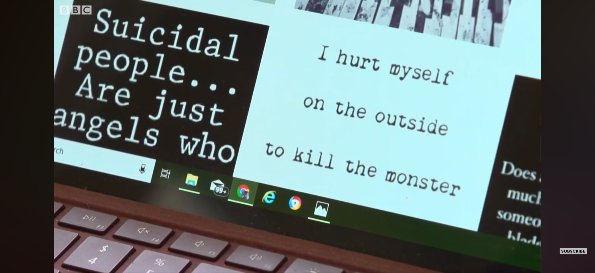
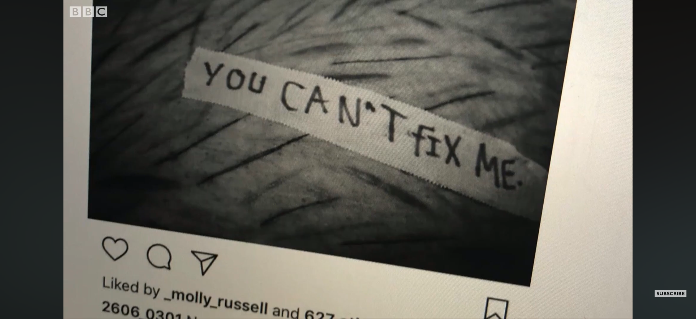
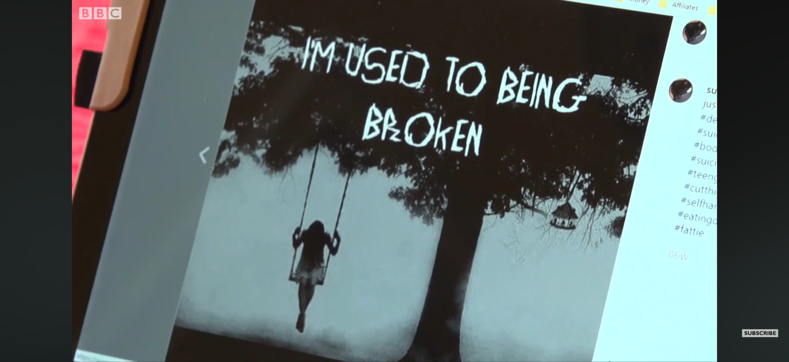

Storytime
Molly Russell
Molly was een 14 jarig meisje uit Londen. Ze was een doorsnee
middelbare scholier, waar het gewoon prima mee ging. Ze haalde
goede cijfers. Ze had vriendinnen. Een dichte groepje vriendinnen:
Davine, Charlotte, Sophie en Nieve. Molly en haar vriendinnen
deelden liefde voor muziek, Harry Potter en paardrijden
9. Vaak liepen ze samen naar school en naar huis. Onderweg naar
huis stopten ze vaak bij de winkel voor chips en koekjes. Maar
haar vriendinnen begonnen in 2017 apart gedrag aan Molly te zien.
Ze was afweziger, kwam steeds minder vaak naar de schoolproducties
van hun muziek en theater lessen. Haar vader merkte het zelfde. Ze
was urenlang op haar kamer en kwam er soms zelfs niet meer uit
voor eten. Wat haar vader vaak merkte: Molly zit steeds vaker op
haar telefoon. Ian Russel rationaliseerde het weg: “It’s just that
social media crap that youngsters use nowadays, but everybody does
it. It’s got to be a phase…” Hij zag het dus niet als een
probleem. Je kunt het hem ook niet verwijten. In 2017 zat
letterlijk de hele wereld al in hun telefoon. De wereld leek meer
verbonden maar ook weer niet. Maar als een stel zombies leek
iedereen er tevreden mee. Op een dag kwam Ian thuis, en riep hij
Molly. Hij zag haar schoenen, jas en tas bij bij de deur bij de
kapstok. Molly reageerde niet. Hij riep der nog een keer. “Molly,
honey. Are you there?…”. Geen reactie. Ian liep naar haar kamer en
wat hij ontdekte was schokkend…
Het verhaal van Molly Russell is een tragische, onverwachtse
verhaal. Maar helaas niet uniek10. Toen ze na het incident keken naar de feed van Molly Russell
zagen ze posts met “donkere quotes”. Quotes die triest, droevig en
een horror sfeer hebben. Dingen net als “I kill myself on the
outside to kill the monster inside” in het zwart wit met een
donkere monospaced typewriter serif font11.



Dit soort quotes had zij opgeslagen, geliked en gedeeld. Ook op de rechtzaak tegen facebook zouden er dit soort quotes genoemd worden.